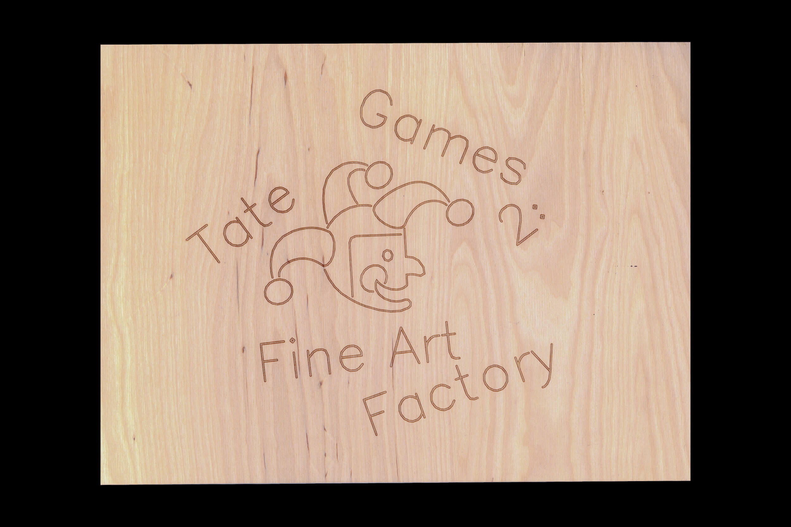

Tate Games 2
The Tate Britain Archive
Tate Britain has a formidable archive. Its holdings span more than a century of British art history. Tate archivists invited a small group of postgraduate students to activate this history, making work in conversation with the archive. Led by Daniel Fitzsimmons at Tate Britain and Eilis Searson at the Royal College of Art, we curated a happening that shared the archive with a broader audience.
I chose to rework Tate Games. The 1975 exhibition asked visitors to explore Tate artworks through activities, puzzles, and play. In my revival, I skipped the middleman, making the artworks a game in themselves. I invited Tate visitors to contribute to crowdsourced paintings, which would hang in the gallery for the rest of the show.
I was drawn the tensions that arose around crowdsourcing art. What makes crowdsourcing in a co-creative context different from using a micro-labor platform like Mechanical Turk? What makes it different from using AI? In spite of these differences, was I in some way perpetuating the cycle of unpaid labor in which I participated?

To provoke these questions, I wanted Tate Games 2 to feel subtly mechanical. I adapted the jester graphic drawn for the original Tate Games, turning its curves into vectorized segments optimal for machine readability. I set type in a Hershey font to the same ends. Surfaces were digitally fabricated: I laser-engraved the plywood and used a pen plotter on paper. The result still felt playful at first, but grew colder on closer inspection.


We developed the show's identity as a collective. Gold risography paid homage to yellowed pages and warm ink surfaces of the archive. One fitting line from the archive — "Please be cautious! Collaborative ventures are always fraught with problems!" — became our title.